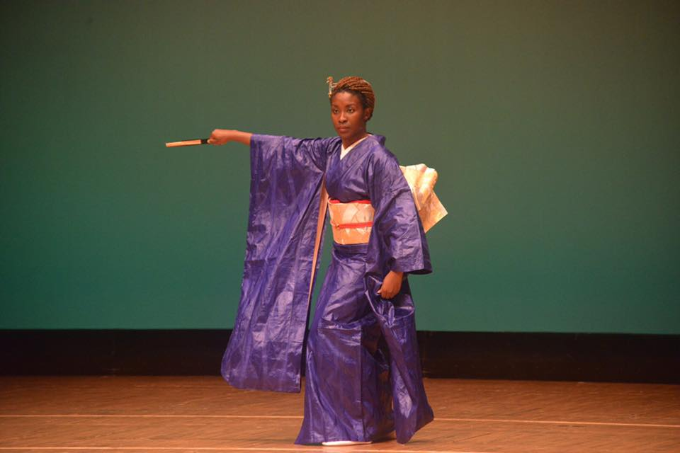
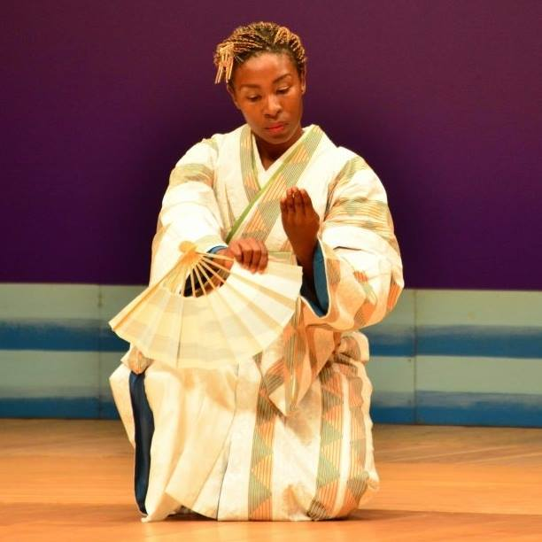
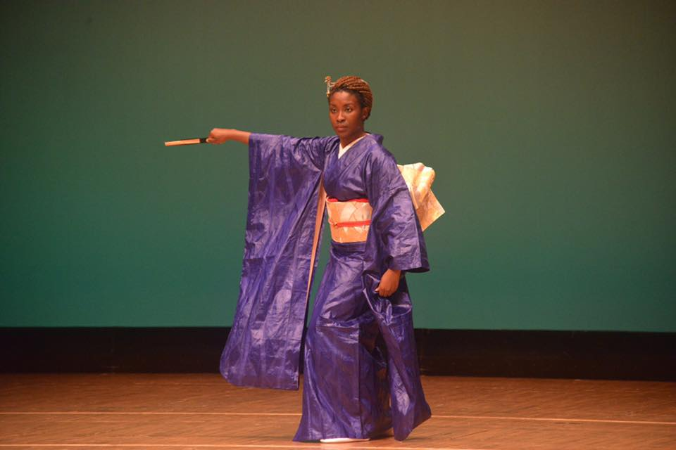
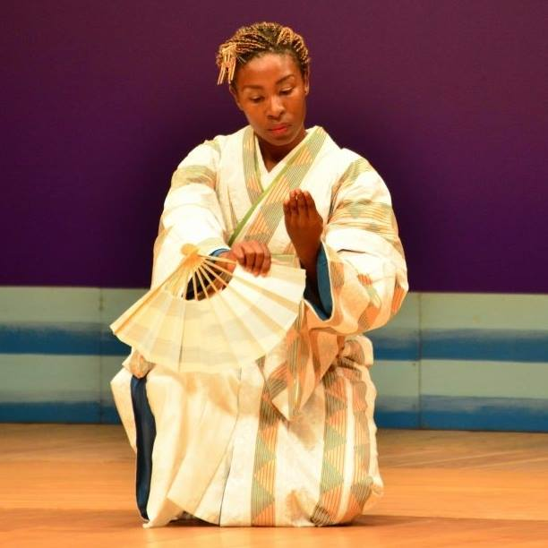

Meet Your Host
Dr Dédé Tetsubayashi is a healer, scholar and advocate who has called Japan home for over fifteen years. Her life’s work sits at the intersection of somatic healing, Black liberation and cultural exchange. Having walked sacred paths and soaked in hidden onsens herself, she brings an insider’s eye and a nurturer’s heart to every detail of this journey.
As your host, she curates deeply restorative experiences rooted in Japanese tradition and diasporic Black practices. She will introduce you to her favorite ryokans, demystify onsen etiquette and hold space for you to rest and reconnect. Join her to reclaim rest as a radical act of self‑love and resistance.
Note from Dr. Dédé
In a world that profits from our exhaustion, choosing rest is revolutionary. I'm Dr Dédé Tetsubayashi, and after 15 years in Japan, I've discovered that true innovation begins with deep restoration. As someone who disrupts systems for a living, I know the code that keeps us running on empty—and I know how to break it. This December, join me for 10 transformative days where rest becomes resistance. Sacred onsen rituals. Ancient forest bathing. Traditional ryokan experiences curated by someone who calls Japan home. You've been coded out of rest. Let me share the blueprint for breaking free. Dr Dédé — Your guide to radical rest
 


